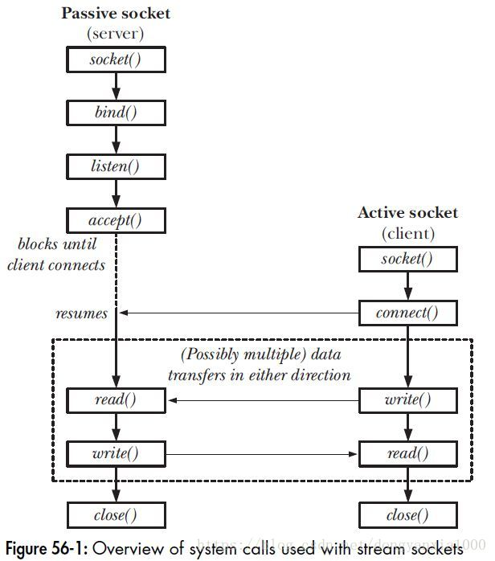
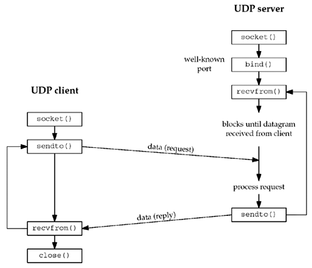

最近需要用C++编写一个网络程序，因此将网络编程的相关知识整理学习一下。
Socket编程
Socket 是对 TCP/IP 协议族的一种封装，是应用层与TCP/IP协议族通信的中间软件抽象层。从设计模式的角度看来，Socket其实就是一个门面模式，它把复杂的TCP/IP协议族隐藏在Socket接口后面，对用户来说，一组简单的接口就是全部，让Socket去组织数据，以符合指定的协议。
Socket 还可以认为是一种网络间不同计算机上的进程通信的一种方法，利用三元组（ip地址，协议，端口）就可以唯一标识网络中的进程，网络中的进程通信可以利用这个标志与其它进程进行交互。
Socket 起源于 Unix ，Unix/Linux 基本哲学之一就是“一切皆文件”，都可以用“打开(open) –> 读写(write/read) –> 关闭(close)”模式来进行操作。因此 Socket 也被处理为一种特殊的文件。
Socket类型
创建 socket 的时候需要指定 socket 的类型，一般有三种：
- SOCK_STREAM：面向连接的稳定通信，底层是 TCP 协议，我们会一直使用这个。
- SOCK_DGRAM：无连接的通信，底层是 UDP 协议，需要上层的协议来保证可靠性。
- SOCK_RAW：更加灵活的数据控制，能让你指定 IP 头部
Socket编程接口
- socket()：创建socket
- bind()：绑定socket到本地地址和端口，通常由服务端调用
- listen()：TCP专用，开启监听模式
- accept()：TCP专用，服务器等待客户端连接，一般是阻塞态
- connect()：TCP专用，客户端主动连接服务器
- send()：TCP专用，发送数据
- recv()：TCP专用，接收数据
- sendto()：UDP专用，发送数据到指定的IP地址和端口
- recvfrom()：UDP专用，接收数据，返回数据远端的IP地址和端口
- closesocket()：关闭socket
Socket通信流程


字节序
不同的计算机对数据的存储格式不一样，比如 32 位的整数 0x12345678，可以在内存里从高到低存储为 12-34-56-78 或者从低到高存储为 78-56-34-12。
但是这对于网络中的数据来说就带来了一个严重的问题，当机器从网络中收到 12-34-56-78 的数据时，它怎么知道这个数据到底是什么意思？
解决的方案也比较简单，在传输数据之前和接受数据之后，必须调用 htonl/htons 或 ntohl/ntohs 先把数据转换成网络字节序或者把网络字节序转换为机器的字节序。
- TCP 和 UDP 的端口是互不干扰的，也就是说系统可以同时开启 TCP 80 端口和 UDP 80 端口。
- socket 不属于任何一层网络协议，它是对 TCP 层的封装，方便网络编程。
网络编程模型
同步阻塞迭代模型
同步阻塞迭代模型是最简单的一种IO模型，其核心代码如下：
1 | bind(srvfd); |
上面的程序存在如下一些弊端：
- 如果没有客户端的连接请求，进程会阻塞在accept系统调用处，程序不能执行其他任何操作。(系统调用使得程序从用户态陷入内核态）
- 在与客户端建立好一条链路后，通过read系统调用从客户端接受数据，而客户端合适发送数据过来是不可控的。如果客户端迟迟不发生数据过来，则程序同样会阻塞在read调用，此时，如果另外的客户端来尝试连接时，都会失败。
- 同样的道理，write系统调用也会使得程序出现阻塞(例如：客户端接受数据异常缓慢，导致写缓冲区满，数据迟迟发送不出)。
多进程并发模型
多进程并发模型在同步阻塞迭代模型的基础上进行了一些改进，以避免是程序阻塞在read系统调用上。核心代码如下：
1 | bind(srvfd); |
上述程序在accept系统调用时，如果没有客户端来建立连接，会阻塞在accept处。一旦某个客户端连接建立起来，则立即开启一个新的进程来处理与这个客户的数据交互。避免程序阻塞在read调用，而影响其他客户端的连接。
多线程并发模型
在多进程并发模型中，每一个客户端连接开启fork一个进程，若客户端连接较大，则系统依然将不堪负重。通过多线程(或线程池)并发模型，可以在一定程度上改善这一问题。
在服务端的线程模型实现方式一般有三种：
- 按需生成(来一个连接生成一个线程)
- 线程池(预先生成很多线程)
- Leader follower（LF）
以第一种为例，其核心代码如下：
1 | void *thread_callback( void *args ) //线程回调函数 |
服务端分为主线程和工作线程，主线程负责accept()连接，而工作线程负责处理业务逻辑和流的读取等。因此，即使在工作线程阻塞的情况下，也只是阻塞在线程范围内，对继续接受新的客户端连接不会有影响。
第二种实现方式，通过线程池的引入可以避免频繁的创建、销毁线程，能在很大程序上提升性能。
但多线程模型先天具有如下缺点：
- 稳定性相对较差。一个线程的崩溃会导致整个程序崩溃。
- 临界资源的访问控制，在加大程序复杂性的同时，锁机制的引入会是严重降低程序的性能。性能上可能会出现“辛辛苦苦好几年，一夜回到解放前”的情况。
IO多路复用模型
多进程模型和多线程(线程池)模型每个进程/线程只能处理一路IO，在服务器并发数较高的情况下，过多的进程/线程会使得服务器性能下降。而通过多路IO复用，能使得一个进程同时处理多路IO，提升服务器吞吐量。这是一种进程预先告知内核的能力，让内核发现进程指定的一个或多个IO条件就绪了，就通知进程。使得一个进程能在一连串的事件上等待。
IO复用的实现方式目前主要有select、poll和epoll。
select和poll的原理基本相同：
注册待侦听的fd(这里的fd创建时最好使用非阻塞)
每次调用都去检查这些fd的状态，当有一个或者多个fd就绪的时候返回
返回结果中包括已就绪和未就绪的fd
相比select，poll解决了单个进程能够打开的文件描述符数量有限制这个问题：select受限于FD_SIZE的限制，如果修改则需要修改这个宏重新编译内核；而poll通过一个pollfd数组向内核传递需要关注的事件，避开了文件描述符数量限制。此外，select和poll共同具有的一个很大的缺点就是包含大量fd的数组被整体复制于用户态和内核态地址空间之间，开销会随着fd数量增多而线性增大。
epoll的出现，解决了select、poll的缺点：
基于事件驱动的方式，避免了每次都要把所有fd都扫描一遍。
epoll_wait只返回就绪的fd。
epoll使用nmap内存映射技术避免了内存复制的开销。
epoll的fd数量上限是操作系统的最大文件句柄数目,这个数目一般和内存有关，通常远大于1024。
总结：
- select：支持注册 FD_SETSIZE(1024) 个 socket。
- poll： poll 作为 select 的替代者，最大的区别就是，poll 不再限制 socket 数量。
- epoll：epoll 能直接返回具体的准备好的通道，时间复杂度 O(1)。
参考链接
- C++网络框架和库,by 帝王铠.
- C++ 高性能服务器网络框架设计细节,by 范蠡.
- 值得推荐的C/C++框架和库 (真的很强大),by tibet889.
- 有哪些值得推荐的c/c++开源框架与库,by 零声学院.
- 有什么适合提高 C/C++ 网络编程能力的开源项目推荐？,by zhihu.
- 网络库libevent、libev、libuv对比,by 小麒麟666.
- libevent、libev、libuv、IOCP、asio、muduo优劣分析、QT下编译libevent静态库,by 雒珣.
- Reactor 模式简介,by lotabou.
- IO设计模式：Reactor和Proactor对比,by 大CC.
- Proactor和Reactor模型,by wiseAaron.
- 如何深刻理解reactor和proactor？,by zhihu.
- Libevent 编程指南,by senlin.
- 网络编程（三）：从libevent到事件通知机制,by auxten.
- 使用 libevent 和 libev 提高网络应用性能,by Martin C. Brown.
- 兄déi，libuv了解一下,by 宋光宇.
- Libuv 源码分析(2):源码一览,by Tubumu.
- IO设计模式：Actor、Reactor、Proactor,by _raindrop.
- Proactor网络编程模式歪解,by WUYU.
- 深入理解Reactor模式,by 独木の白帆.
- socket 编程基础知识,by cizixs.
- 一文读懂高性能网络编程中的I/O模型,by Jack Jiang.
- 几种典型的服务器网络编程模型归纳(select poll epoll),by DrStream.
- Linux IO模型和网络编程模型,by wade&luffy.
- 开源免费的C/C++网络库(c/c++ sockets library) 七剑下天山,by 工程师WWW.
- c++ 网络编程（一）TCP/UDP windows/linux 下入门级socket通信 客户端与服务端交互代码,by aircraft.